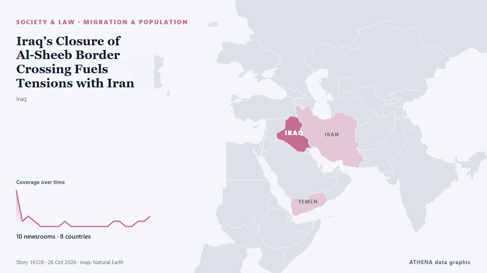

Iraq’s Closure of Al-Sheeb Border Crossing Fuels Tensions with Iran

The closure follows PM al-Zaidi's September 12 directive after Iran-linked drone strikes on Saudi Arabia's East-West pipeline were traced to Iraqi territory, with investigation committees formed to… из Kurdistan24 (English)
Независимые источники: 10 изданий в 8 странах, с 21 окт.; первым сообщил Kurdistan24 (English); освещение на пике. ATHENA оценивает риск как низкий (1.8/10), прежде всего из-за тяжести описываемого ущерба и качества доказательств. Уверенность — 88 % (высокая); подтверждают независимые источники: 10 изданий, средняя надёжность источников — 78 %. СМИ по странам: Ирак (6), Саудовская Аравия (3), Кувейт (2). Освещение: с 21 окт. по 26 окт., 133 ч.
Почему это важно: Правовые и политические изменения меняют права, обязанности и государственные услуги для затронутых людей.
Что изменилось: 4 новых сообщений от 4 редакций за 24 часа до 26 окт..
Первый заголовок: Iraq closes Sheeb border crossing with Iran to check security
Заголовки приводятся на английском языке, как они были опубликованы.
Коротко в цифрах
Отобрано, оценено и написано по опубликованной методологии ATHENA. Ни один редактор не вмешивается в отдельные события. Как это создаётся ›
| 21 Oct 05:06 UTC | 7 |
|---|---|
| 21 Oct 11:06 UTC | 1 |
| 21 Oct 17:06 UTC | 2 |
| 21 Oct 23:06 UTC | 1 |
| 22 Oct 05:06 UTC | 0 |
| 22 Oct 11:06 UTC | 0 |
| 22 Oct 17:06 UTC | 0 |
| 22 Oct 23:06 UTC | 0 |
| 23 Oct 05:06 UTC | 1 |
| 23 Oct 11:06 UTC | 0 |
| 23 Oct 17:06 UTC | 0 |
| 23 Oct 23:06 UTC | 0 |
| 24 Oct 05:06 UTC | 0 |
| 24 Oct 11:06 UTC | 0 |
| 24 Oct 17:06 UTC | 0 |
| 24 Oct 23:06 UTC | 0 |
| 25 Oct 05:06 UTC | 1 |
| 25 Oct 11:06 UTC | 1 |
| 25 Oct 17:06 UTC | 0 |
| 25 Oct 23:06 UTC | 0 |
| 26 Oct 05:06 UTC | 1 |
| 26 Oct 11:06 UTC | 1 |
| 26 Oct 17:06 UTC | 2 |
| 22 Oct 07:04 UTC | 0.0 |
|---|---|
| 22 Oct 07:07 UTC | 1.1 |
| 26 Oct 18:20 UTC | 1.8 |
Откуда эти цифры
Значимость
Риск
Уверенность
Освещение — кто сообщил и когда
заголовок в оригинале · открывает источник- Kurdistan24 (English) · ИракIraq Closes Shaib Border Crossing With Iran Indefinitely As Federal Government Orders Shutdown
- Arab Times · КувейтIraq Closes Sheeb Border Crossing With Iran Until Further Notice
- Asharq Al-Awsat (English) · Саудовская АравияReport: Baghdad Closes Border Crossing with Iran Under US Pressure
- The National · ОАЭIraq closes major border crossing with Iran over 'security arrangements', says official
- The New Arab · INTIraq closes Sheeb border crossing with Iran to check security
- Kurdistan24 (English) · ИракAFP: Iraq Closes Most Iran Border Crossings Under US Pressure
- Kurdistan24 (English) · ИракIran Expresses Shock Over Iraq’s Closure of Al-Sheeb Border Crossing
- Daily Maverick · Южно-Африканская РеспубликаIraq closes Sheeb border crossing with Iran to check security, sources say
- Arab Times · КувейтIraq Denies Houthi Bases on Its Territory, Closes Iran Border Crossing
- Iran International (English) · ИранIraq plays down Iran border disruption as more closures reported
- APA (English) · АзербайджанTrump: We are close to ending wars in Ukraine and with Iran
- Kurdistan24 (English) · ИракIraqi Lawmaker Says Mandali Could Be Next Iran Crossing to Close
- Asharq Al-Awsat (English) · Саудовская АравияIraq to Rehabilitate Border Crossing with Saudi Arabia
- Shafaq News (English) · ИракBorder restrictions divert Iraq-bound trucks to Ilam’s Mehran
- Asharq Al-Awsat (English) · Саудовская АравияIraq’s Closure of Al-Sheeb Border Crossing Fuels Tensions with Iran
- The Jerusalem Post · ИзраильIraqi PM orders investigation into provincial council threats over closed Iran border crossing
- Iran International (English) · ИранIraq orders arrest of provincial leader amid tensions over Iran ties
- Shafaq News (English) · ИракIraq denies banning agricultural imports via Shalamcheh crossing